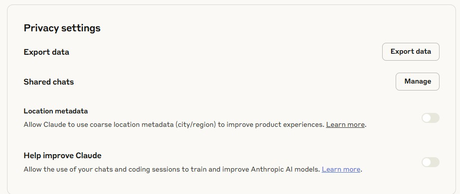
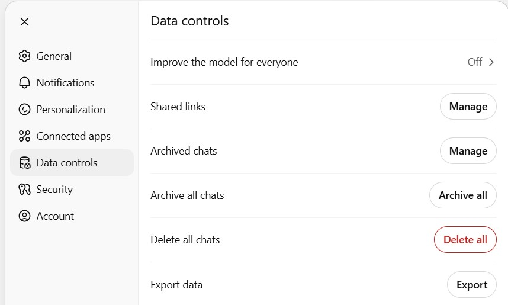
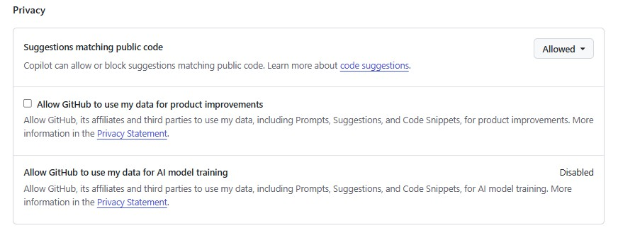

Warning
Things to consider before you start using AI tools in your work
I. genAI results are probabilistic and not deterministic
Even provided the exact same prompt, you may get a different response from any genAI tool.
In science, we strive for reproducible results. You cannot simply pass your data to a chatbot for analysis. ‘Results’ generated by a chatbot cannot be reproduced and will not meet scientific standards for review. However you might ask a genAI tool to help you generate code to analyse your data, that you can review, modify, save and rerun.
II. AI may use information you provide to it to train its models
- I generally expect everything I do online to end up somewhere.
- Github copilot was trained on all public code regardless of license. Your data may already be in there.
- Copyright infringement has clearly been part of training AI models
- Even if information you provide to a genAI tool is not used to train the model, responses generated from the model may be retained. The details and laws are fuzzy and evolving.
- I would refrain from putting sensitive data online always. This includes interacting with it with AI models.
III. How to limit the information you provide to genAI tools
A. Change privacy settings
- Current privacy policies are below, along with links on how to change the defaults if you wish. The policies are evolving (i.e. Anthropic changed their defaults Sept 2025).
To turn off data sharing go here: https://claude.ai/settings/data-privacy-controls (also located under settings -> privacy). Toggle the “Help improve Claude” button to off. 
To turn off data sharing go here: https://chatgpt.com/#settings/DataControls (also located under settings -> piracy). Toggle the “Improve the model for everyone” button to off.

Full policy here: https://help.openai.com/en/articles/7730893-data-controls-faq
You can adjust the privacy settings go here:
https://docs.github.com/en/copilot/how-tos/manage-your-account/manage-policies

Full policies here: https://copilot.github.trust.page/
GitHub Copilot accesses a variety of different models and providers under the hood. Sometimes the agreements they may have with the model providers may differ based on the provider, or may differ from the default data sharing agreement were you to access that model directly from the provider. Read all about here: https://docs.github.com/en/copilot/reference/ai-models/model-hosting#openai-models
Collects and uses your data extensively. Seems about par for the course for everything google. https://support.google.com/gemini/answer/13594961?hl=en
This list is not exhaustive and may quickly become out of date.
- ?
B. Run a model locally
Not covered today, but some resources to get you started
LM Studio https://lmstudio.ai/